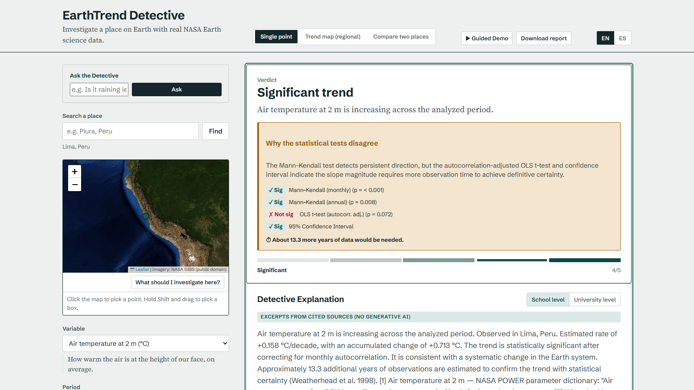
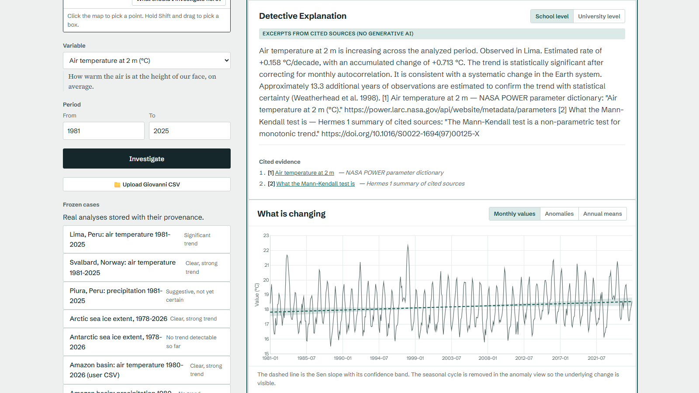
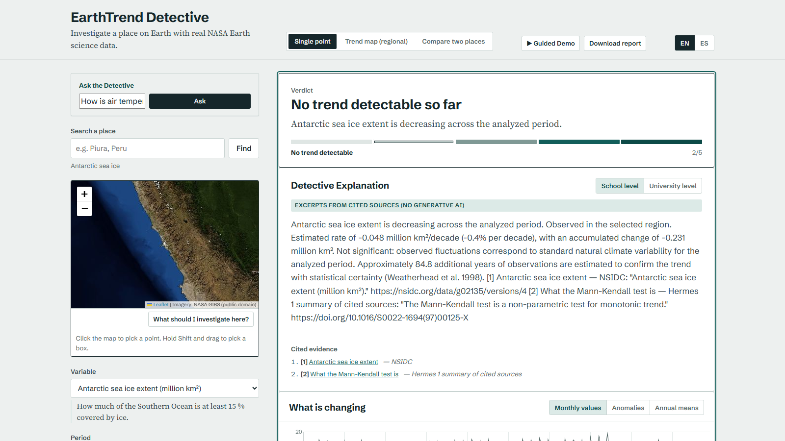
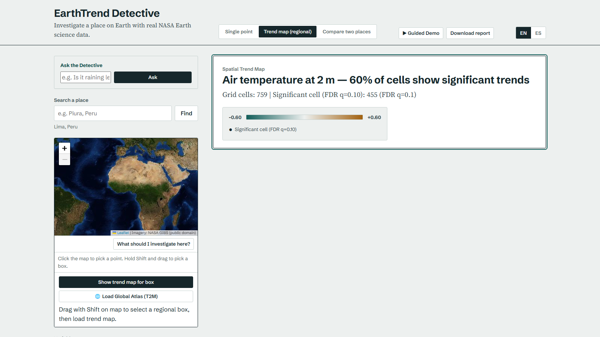
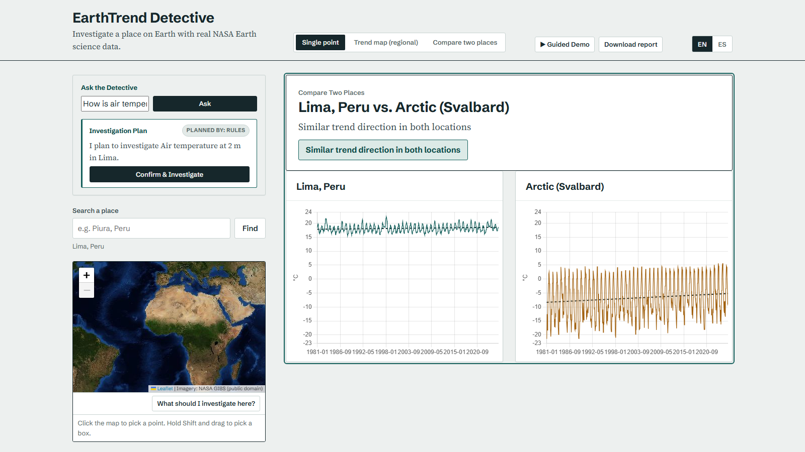
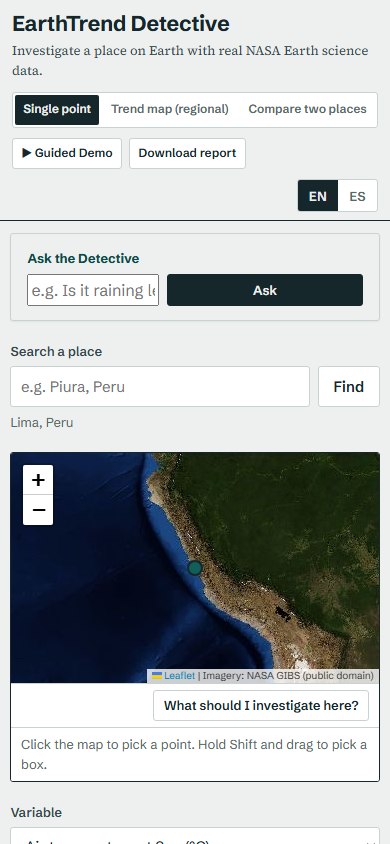

Investigate a place on Earth with real NASA Earth science data.
Climate headlines are everywhere, but verifying a claim currently requires downloading gigabytes of satellite NetCDF files, writing Python scripts, and modeling serial autocorrelation.
Every investigation must answer transparently:
Students and educators get trapped between alarmist headlines and inaccessible raw data archives. They need an honest, accessible tool.

Click anywhere on Earth or search a location. The app immediately plots decades of monthly NASA observations with Theil-Sen trendlines and a 95% confidence fan.
Direct API and verified open data access pipelines:
Every investigation result displays exact citation, raw API query URL, native grid resolution, and SHA-256 checksum verifying data integrity.


Theil-Sen Slope: −0.495 million km²/decade (−4.4%/dec, p < 0.001).
All 3 statistical tests agree across 48 years (1978–2026). Cumulative loss: −2.378 million km² of sea ice.
Theil-Sen Slope: −0.048 million km²/decade (p = 0.528).
Changes correspond to natural interannual variability. Our tool honestly refuses to declare a false trend, calculating that 84.8 more years of data are required.
Weatherhead et al. (1998) Detectability Formula: Accounts for observation variance, first-order autoregressive noise (φ), and magnitude of change. No overclaiming.

759 grid cells across South America with Benjamini-Hochberg False Discovery Rate (q = 0.10) to control spatial false positives.

Translates questions into structured plans. Grounded in 168 verified NASA documents. Strictly extractive citations with publisher links; never invents numbers.
Live Public Web App:
https://soulgeit.github.io/nasa-earth-detective-o-nasa-reto-./
Open source under MIT License. All data attribution to NASA POWER, GISS, NSIDC, and GES DISC.
